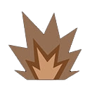
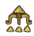
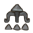
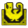
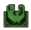

Le Xu Wu
Céphalopode

Céphalopode prédateur s'en prenant aux Gardiens. Le mucus sécrété par ses tentacules durcit rapidement pour former des bords tranchants pareils à des lames ou des lances. Ceci explique pourquoi on surnomme le Xu Wu "l'assassin transperçant". Les énormes bouches cachées sous son ventre lui permettent de dévorer des proies encore plus grandes.
De nature prédatrice, le Xu Wu attaque de façon systématique les Gardiens se trouvant dans son habitat. Bien que n'ayant pas d'yeux, ses autres sens développés lui permettent de prendre ses proies au dépourvu, notamment en se faufilant dans de petites crevasses et en rampant à toute vitesse sur le sol. Si le Xu Wu expose sa bouche, c'est qu'une attaque mortelle est imminente, mais un coup puissant pourrait vous permettre de le renverser.
Présentation du Xu Wu
Le Xu Wu est un céphalopode redoutable que l'on croise dans les ruines de Wyveria, et il inaugure avec le Nu Udra une toute nouvelle catégorie de monstres dans Monster Hunter Wilds. Ce grand monstre évoque un épéiste doté de nombreux bras, chacun de ses tentacules pouvant se transformer en lame pour attaquer avec une allonge impressionnante. Sa silhouette étrange, mi-poulpe mi-guerrier, en fait l'un des adversaires les plus originaux du jeu.
Pour comprendre le comportement du Xu Wu en combat, retenez qu'il alterne entre coups de lames rapides, projectiles tranchants, plongeons sous terre et attaques de zone à grande portée. Il peut sauter par-dessus vous pour lancer une salve de pointes, tourner sur lui-même pour balayer les chasseurs autour de lui, ou vous saisir pour vous drainer votre santé. Le profil du Xu Wu dans MH Wilds est donc celui d'un duelliste agile, mais qui télégraphie la plupart de ses attaques les plus dangereuses.
Ce guide complet du Xu Wu vous aidera à préparer votre équipement, à identifier ses points faibles et à comprendre ses schémas d'attaque. Avec les bons réflexes, vous transformerez cet adversaire déroutant en une proie accessible.
Comment battre le Xu Wu
Pour savoir comment battre le Xu Wu dans Monster Hunter Wilds, commencez par soigner votre préparation. Une préparation avant la chasse du Xu Wu efficace consiste à emporter une arme de glace ou d'empoisonnement, car ce sont ses deux principales faiblesses. Comme il n'utilise aucun élément dans ses attaques, vous pouvez vous concentrer sur des compétences offensives. Les bouchons d'oreille et de quoi vous libérer d'une saisie sont aussi des alliés précieux.
Une fois sur le terrain, une stratégie efficace contre le Xu Wu repose sur la lecture de ses animations. Avant chaque attaque, il a besoin d'un instant pour former ses lames provisoires : si vous voyez ses tentacules se préparer, reculez ou contournez-le. Pour esquiver les attaques de tentacules du Xu Wu, roulez vers son dos plutôt que de fuir en ligne droite, car la plupart de ses coups sont dirigés vers l'avant. De là, vous pouvez le frapper en toute sécurité.
Sa bouche est son point faible principal, mais elle est cachée sous son corps et ne se révèle que dans certaines attaques. Quand il rétracte ses tentacules et dévoile sa gueule avant de foncer vers vous, il s'agit de l'une de ses attaques les plus puissantes : esquivez en roulant sur le côté ou derrière lui, puis concentrez vos coups sur la bouche pour le faire tomber. Pour échapper à la saisie du Xu Wu, utilisez des munitions de Slinger sur sa zone rouge, ou prévoyez de quoi vous dégager, car cette attaque peut vous coûter énormément de santé.
Pour couper les tentacules du Xu Wu, privilégiez une arme tranchante : ses quatre tentacules latéraux et arrière sont sectionnables, ce qui réduit sa portée et les dégâts de plusieurs attaques, tout en vous offrant du butin à la découpe. Quand il atterrit, soyez attentif à sa tornade de lames, très puissante et rapide à enclencher. S'il plante une lance sur un de ses membres, un simple pas de côté suffit à l'éviter. Enfin, lorsqu'il creuse sous terre, surveillez le sol et préparez-vous à bondir hors de la zone.
Pour un conseil de chasseur expérimenté contre le Xu Wu, retenez ceci : n'oubliez pas qu'il possède une version plus agressive dans son nid, au fond de sa zone, avec de nouvelles capacités. Gardez votre calme, restez mobile et profitez des fenêtres d'attaque qu'il vous laisse après ses grosses attaques.

Les points faibles du Xu Wu
Pour exploiter la faiblesse élémentaire du Xu Wu, privilégiez la glace, le seul élément recommandé. Elle est redoutable sur la bouche, la membrane et le torse, et reste très efficace sur la tête et les pattes. À l'inverse, le dragon est totalement inefficace, quelle que soit la zone visée, et le feu, l'eau et la foudre ne donnent que de faibles résultats. Pour trouver la meilleure arme contre le Xu Wu, choisissez donc une arme de glace, ou à défaut une arme capable d'empoisonner.
Si vous voulez connaître le point faible du Xu Wu en dégâts physiques, la tête et la bouche encaissent très bien les coups tranchants et contondants, ce qui en fait les cibles numéro un. La bouche est aussi très vulnérable aux armes à distance. Les pattes sont correctes, tandis que la membrane et le torse sont les zones les plus résistantes : mieux vaut ne pas s'y attarder si vous voulez infliger un maximum de dégâts au Xu Wu.
Autre point à connaître, les parties brisables du Xu Wu sont la tête, la bouche et ses gros membres, ce qui vous offre du butin supplémentaire, dont un croc si vous brisez sa bouche. Pour un choix d'arme adapté au Xu Wu, une arme tranchante est idéale pour sectionner ses tentacules, tandis qu'une arme contondante est parfaite pour assommer le monstre en frappant sa tête.
| Tête | ||||||||
| Membrane | ||||||||
| Bouche | ||||||||
| Torse | ||||||||
| Tentacule | ||||||||
| Patte avant gauche | ||||||||
| Patte avant droite | ||||||||
| Patte milieu gauche | ||||||||
| Patte milieu droite | ||||||||
| Patte arrière gauche | ||||||||
| Patte arrière droite |
Faiblesses aux altérations d'état du Xu Wu
Le Xu Wu est une cible très intéressante pour les altérations d'état efficaces contre le Xu Wu. Le poison est de loin le plus efficace, avec une très bonne rentabilité, tandis que la paralysie, le fléau-explosion, l'étourdissement et la léthargie fonctionnent également très bien. Cette sensibilité aux altérations d'état du Xu Wu vous laisse un large choix de builds, ce qui est appréciable pour adapter votre équipement à votre style de jeu.
Seul le sommeil est moins rentable, puisqu'il ne bénéficie que d'une efficacité réduite. Pour trouver l'altération la plus rentable contre le Xu Wu, privilégiez le poison, qui inflige des dégâts constants pendant que vous vous concentrez sur ses mouvements. Une paralysie ou un étourdissement bien placé vous laisse aussi de longues secondes pour frapper sa tête et sa bouche.
Pour une chasse du Xu Wu axée sur les états anormaux, combinez plusieurs altérations en alternant les accumulations pour garder la pression. Le fléau-explosion fait de gros dégâts à chaque déclenchement, et la léthargie limite ses enchaînements agressifs. Vous profiterez ainsi de fenêtres d'attaque régulières et de dégâts constants.
| Afflictions | Efficacité |
|---|---|
 |
|
Objets efficaces et inefficaces contre le Xu Wu
Côté équipement, seuls deux objets efficaces contre le Xu Wu sont à emporter. Le piège électrochoc et le piège à fosse contre le Xu Wu fonctionnent tous les deux, et vous laissent le temps d'attaquer sa tête et sa bouche en toute sécurité. Ils sont aussi parfaits pour capturer le Xu Wu, en lui lançant deux bombes tranquillisantes une fois qu'il est piégé et suffisamment affaibli.
En revanche, la capsule aveuglante et la capsule sonore n'ont aucun effet sur lui : laissez-les à la maison pour libérer de la place dans votre sac. Gardez plutôt des objets de soin et de quoi vous libérer de sa saisie.
Pour un inventaire optimisé pour chasser le Xu Wu, emportez des pièges, des objets de soin et vos munitions de Slinger. Vous gagnerez en efficacité sans gaspiller de ressources et vous aurez toujours une solution sous la main quand il tente de vous attraper.
| Objets | Efficacité |
|---|---|
 |
|
 |
|
 |
|
 |
Le Xu Wu, le mangeur de Gardiens
Le Xu Wu de mhwilds
ne sera pas un gros challenge, mais certains de ses patterns pourraient vous surprendre, notamment quand ce dérnier se retourne pour vous sauter dessus.